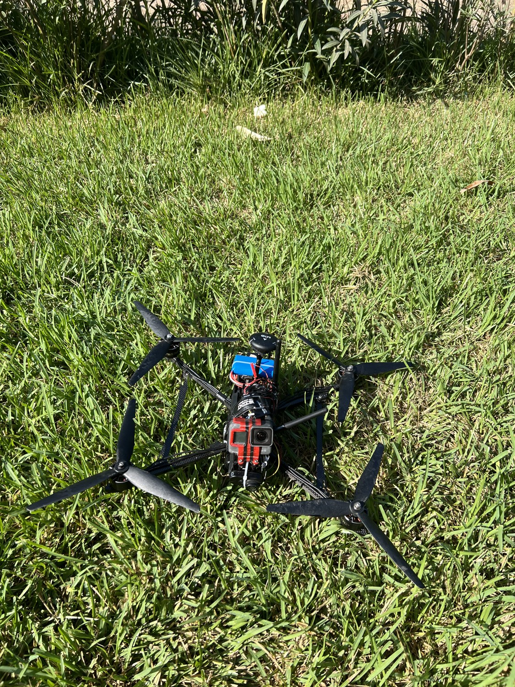

Plan the platform
Component compatibility, workshop equipment, BOMs and airframe fabrication preparation.
Platform portfolio
FPV, cinewhoop, quadcopter and heavy-lift work across 2 to 42-inch platforms, covering propulsion, integration, calibration, tuning and missions, alongside helicopter diagnostics.

Original 10-inch FPV quadcopter project photograph.
Component compatibility, workshop equipment, BOMs and airframe fabrication preparation.
Propulsion, power, flight controllers, GNSS, RC and telemetry interfaces.
Calibration, flight modes, failsafes, estimator review and filter/PID investigations.
Bench and flight-test support, comparative log review and documented next-test actions.
This portfolio includes distinct builds and engagements. The delivery and validation reached are identified within each section.
Develop and commission a heavy-lift delivery quadcopter with a payload-release mechanism. The Saudi Arabia project used a reported 5 kg rice payload; the matching mission log records 20.25 km of total out-and-return travel.
Supported the delivery platform through ground-station connectivity, radio and sensor checks, Pixhawk-family autopilot configuration, flight modes, failsafes, staged field tests and live video-call guidance. Worked on the payload-release interface and reviewed flight logs to connect aircraft behaviour with configuration and next-test decisions.
A configured delivery platform, remote field-test guidance, payload-release operation and documented flight review. The 21 January record identifies Pixhawk6X and ArduCopter 4.6.3, with a 35.67-minute armed interval and 10.11 km maximum displacement from the arming position.
The 20.25 km distance is verified by GPS-position integration and cross-checked against groundspeed. It is total out-and-return travel, not a one-way radius. The 5 kg payload and delivery outcome are confirmed by the project owner; the log records release commands but does not measure payload mass. The attached report documents the radio failsafe, vibration/clipping and power-telemetry findings.
Build and configure a 6S FPV quadcopter for stabilized and GPS-assisted flight.
Selected propulsion and power components, integrated Pixhawk 6X and sensors, completed wiring and calibration, and configured flight modes, waypoint missions, failsafes and PID tuning.
An integrated quadcopter with manual, assisted-flight and mission-testing work.
The documented project work includes approximately 2 kg payload testing. Mission and payload checks apply to this development configuration.
Support the development and flight-control investigation of a heavy-lift aircraft for a DARPA Lift Challenge participating team.
Supported a U.S. heavy-lift team through remote flight-log review and live test discussions, examining PID/rate tracking, motor imbalance, vibration and clipping, estimator and compass faults, GPS behaviour and battery response.
Diagnostic findings, filter and PID-tuning recommendations, configuration support and test-review documentation.
The published portfolio identifies DARPA Lift Challenge team support. This describes engineering support to a participating team, not employment by DARPA, official endorsement or a competition outcome.
Multirotor development across FPV, cinewhoop and heavy-lift aircraft, from compact 2-inch builds to 42-inch-class platforms.
Worked across 2, 3, 5, 7, 10, 15, 22 and 42-inch classes: propulsion sizing and motor/ESC/propeller compatibility, wiring and avionics integration, firmware configuration, sensor calibration, troubleshooting, PID/filter tuning and real mission preparation. The portfolio includes support for a DARPA Lift Challenge team.
Configured and tuned aircraft, flight-test support, mission setup and diagnostic recommendations across different platform classes.
Completed delivery and client acceptance are recorded. A later delivery note states that further work would continue; order completion is not treated as independent proof that every planned validation step was finished.
Investigate position drift, altitude/yaw tracking and configuration concerns using supplied test logs.
Reviewed swashplate/servo mapping, governor/RPM, motor interlock, failsafes, yaw and power-bus data. Analysed vibration/notch filtering, external INS / EKF3 and rangefinder configuration.
Diagnostic reports with findings, corrective recommendations and acceptance criteria for subsequent tests.
Latest supplied validation: static run-up review and recommendations for further hover tests.
Build and configure a sensor-equipped S500 quadcopter with assisted-flight functions.
Integrated Pixhawk 6X, GNSS, telemetry and propulsion interfaces, completed calibration and parameter setup, and worked on flight-stability checks.
A configured S500 development platform and integration work sample.
This case focuses on the verified S500 hardware integration, sensor calibration and development testing. It does not specify a production firmware release.
Prepare a four-motor X500 layout with manufacturable plates and motor-mount interfaces.
Worked on airframe proportions, carbon-plate and motor-mount geometry and the corresponding DXF/CNC preparation. Checked the four-motor arrangement and assembly presentation.
Airframe and mount drawings, cutting preparation and assembly-preview material.
Design previews are not photographs of a manufactured aircraft. Physical fit, fabrication and flight validation are not confirmed in the reviewed record.
Bring frame and motor-arm assembly into a structured sequence for reinforcement, propulsion wiring and avionics installation.
Advanced the frame and arm assembly and reviewed stiffness concerns. Structured the remaining work around local reinforcement, motor/ESC wiring, battery preparation and flight-controller installation.
Assembly progress records, reinforcement review and a staged propulsion/avionics integration plan.
The reviewed conversation identifies wiring, battery and autopilot installation as subsequent work. Completed electrical integration or flight validation is not claimed.
Prepare component, tooling and spare-parts plans across drone sizes.
Prepared workshop equipment and component plans for 3-inch, 5-inch and 7-inch FPV configurations, including compatibility review, supplier research and production quantities.
Four structured workbooks covering workshop equipment and three drone configurations, with component options and quantities.
The verified engagement covers planning and documentation. Procuring or assembling every listed system is not implied.
Organize ArduCopter configuration guidance around geofencing, coordinates, return-to-launch and failsafe behaviour.
Wrote a structured first-version technical document covering geofence configuration, MGRS coordinates, RTL and failsafes, with scope for subsequent refinement.
An initial configuration-reference PDF organized for review and practical follow-up.
Documentation delivery is verified. It does not establish operational certification, aircraft deployment or completed field validation.
Investigate configuration and altitude-source options for a multirotor operating without a conventional GPS setup.
Provided log-analysis and configuration support, discussed Raspberry Pi and barometric-data interface options, and carried out comparative Pixhawk-based tuning experiments to inform troubleshooting.
Initial configuration guidance, diagnostic discussion and test observations supporting the client's next iteration.
The client implemented the custom firmware changes and reported bench operation of the virtual barometer. That implementation is not claimed as my own. The later milestone was not started; final flight validation is not established.
Investigate yaw tracking and estimator behaviour on a PX4 multirotor.
Reviewed yaw setpoint/response, estimator and sensor configuration, available actuator authority and FFT/filter evidence. Turned the findings into configuration checks and next-test recommendations.
A structured log-review report separating observed behaviour from tuning hypotheses.
The report covers the supplied flight evidence; completed post-change flight validation is not claimed.
Stabilize the filtering baseline before changing roll and pitch PID gains.
Reviewed motor-frequency peaks, ESC telemetry, harmonic-notch tracking, vibration and control plots, then proposed a bounded filter change and a clean follow-up test.
A focused engineering report and test recommendations for the custom-controller setup.
The recorded delivery is analysis and tuning guidance; the report is not independent proof that every later flight target was achieved.
Develop an airframe and propulsion concept around a cutting payload, hose forces and an offboard collection system.
Prepared CAD and assembly studies, mass and propulsion budgets, six-motor versus coaxial trade-offs and bench/simulation/flight verification gates. Connected payload interfaces and manufacturability with the next CAD/Gazebo milestone.
A documented engineering feasibility study with a staged test plan.
Concept and feasibility work. Renders show the design, not a completed aircraft; thrust, mass and power estimates are not measured flight performance.
Assembly & integration
Another build within the multirotor portfolio, shown during assembly and field preparation.